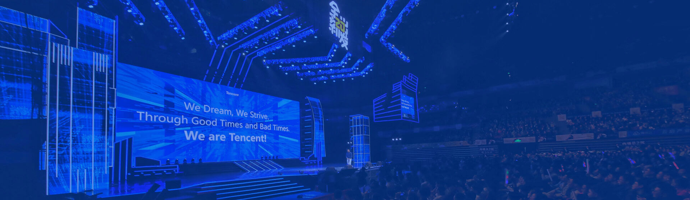
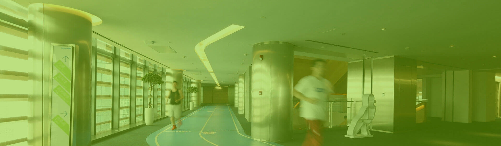

人才发展
人才是腾讯最宝贵的财富。
我们一直高度重视员工的发展，不仅为员工设计专业和管理的双通道职业发展路径，让员工的能力得到更聚焦更清晰的发展，也同时让每个人的成长贡献能够通过职级体系得到及时明确的体现。
腾讯学院成立于2007年，标志着腾讯为员工打造专业的成长发展之路，为企业打造学习型组织进入新的里程碑。
以成为“互联网行业最受尊敬的企业大学”为愿景，我们通过设计职业发展通道和对应的完善培训体系，努力成为腾讯员工的成长顾问与业务团队的发展伙伴，为腾讯的现在和未来培养人才。
工作环境

办公环境
作为腾讯全球新总部，腾讯滨海大厦于2017年10月正式启用。这是一座集数字化、智能化于一体的智慧大厦。这座“互联互通”的大厦，象征着互联网将各个角落互相连通，更体现了腾讯是一家专注连接人与人、人和服务、以及未来人和设备的互联网高科技企业。除此以外，我们在北京、上海、成都、广州等多个城市以及美国、韩国等多个海外国家均建立了分支机构，并为当地员工打造了舒适、创新，体现腾讯文化特色的办公环境。
多元文化
腾讯一直以来坚持提供平等、透明、无歧视的工作环境，对不同性别、国籍、民族、宗教信仰的员工给予充分尊重，禁止同事间开冒犯性的玩笑或展示冒犯性的物品。同时，严格遵守国家相关规定，维护员工利益，共同创造一个平等、和谐、多元文化融合发展的工作环境。
员工活动
以丰富多彩的活动，深入人心的文化品牌，将文化的信念不断传承。
-

员工大会
每年年底举行的员工大会，和新年晚会都是腾讯年度最重要的盛会，员工大会上，向员工传递公司战略、业务布局与管理思路，并表彰优秀团队。
-

公司年会
自腾讯创立以来，每年年底，全体员工欢聚一堂，凝聚才华与激情创作出一个个精彩的节目，增加同事之间的感情，同时激励员工在新的一年里再接再厉。
-

腾讯文化日
每年的11月11日，是腾讯的生日，也是所有腾讯人的节日。这一天，全体腾讯员工都会穿着由腾讯人自己设计的特色文化衫，摆出创意造型拍合影，以及参加总办Link Time等传统活动，共同庆祝公司的生日，将文化不断传承下去。
-

腾讯志愿者
腾讯志愿者是腾讯员工自主发起的志愿者组织。员工在业余时间以丰富多样的方式参与公益活动，践行社会责任和科技向善。
-

踏春日
腾讯在每年的四月，面向员工和家人组织公益徒步活动，不仅强身健体、增进与家人之间的感情，并传递爱与社会责任。
-

形象店
腾讯形象店被腾讯员工亲切地称为“爱马哥”（Image的谐音），是腾讯员工休憩和交流的地方，也是我们对外开放，集中展示周边产品的场所。
-

文体协会
为关爱员工健康，丰富业余生活，腾讯成立了舞蹈、音乐、篮球、足球、羽毛球、桌游、戏剧社等数百种文体协会。